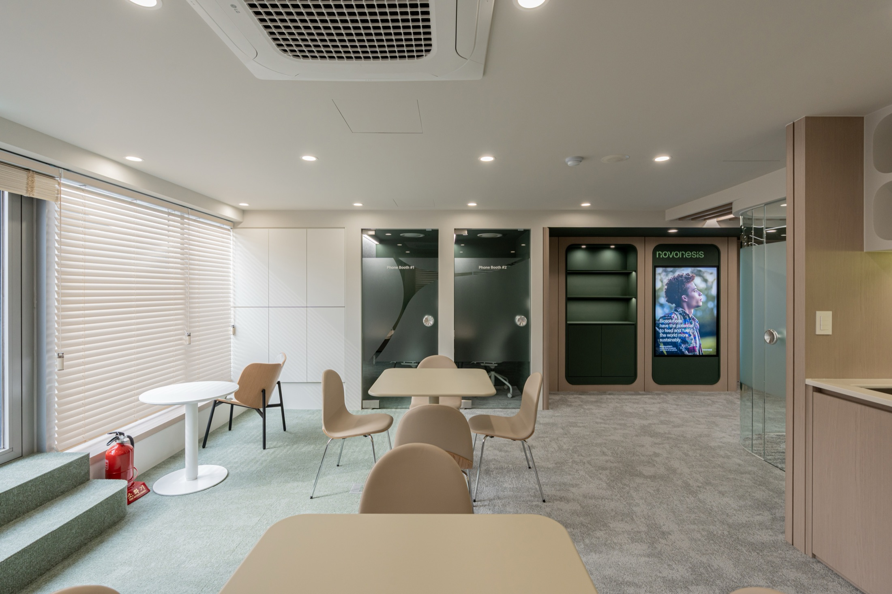
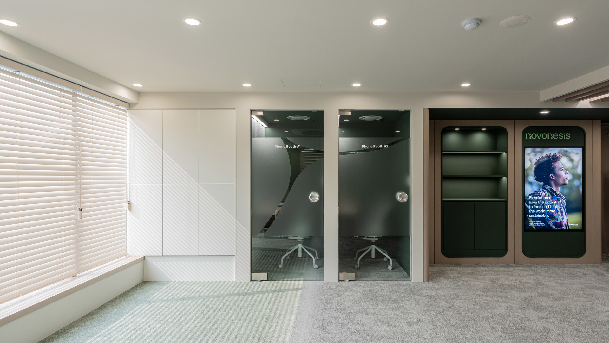
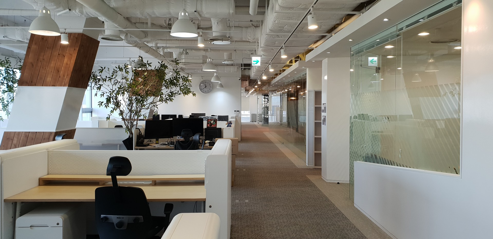

Years of Experience
14Years
공간을 사용하는 사람과 업무의 방식을 이해하며, 오랜 현장 경험을 더해 프로젝트의 기준을 만들어왔습니다.
About Design Code
디자인코드는 고객의 생각과 현장의 조건, 설계자의 경험을 연결합니다. 처음 나눈 이야기부터 설계와 시공까지 하나의 흐름으로 완성합니다.

14Years
공간을 사용하는 사람과 업무의 방식을 이해하며, 오랜 현장 경험을 더해 프로젝트의 기준을 만들어왔습니다.
250+
기업의 규모와 일하는 방식에 맞춘 업무공간을 설계하고 시공해온 누적 프로젝트입니다.
8Fields
가구와 설비, 인터넷, 보안, OA, 정수기, 이사까지 공간 구축에 필요한 업무를 한 흐름으로 연결합니다.
서로 다른 브랜드와 일하는 방식에서 출발해, 각 프로젝트에 맞는 공간의 답을 찾습니다.




Drag to explore
Our Standard
3D 투시도로 공간을 미리 확인하며 디자인 방향을 구체적으로 협의합니다.
실내건축전문건설면허를 바탕으로 관련 기준과 절차에 맞춰 공사를 진행합니다.
준공 후 기본 1년에 추가 1년을 더해 최대 2년간 하자보증을 제공합니다.